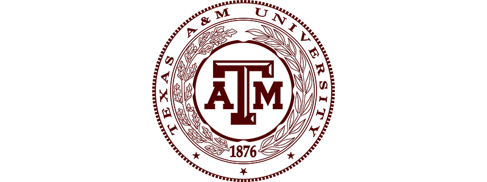

Home
Mike
Roberto
Ty
Emily
Noah
Colleen

This page is dedicated to our TCMG 412 Group 6, Project 2.
Howdy! Our team is composed of the following members:
Mike Peña, Ty Hawkins, and Roberto Perez, Emily Robertson, Colleen Anderson, and Noah Bruce.
Visit our pages above.